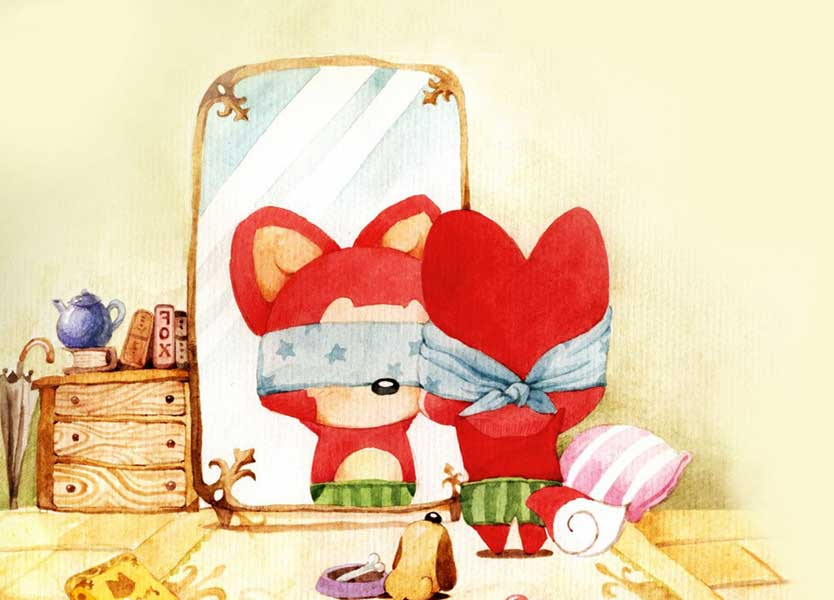

致自己最喜欢的女孩❤SYL❤
我会用自己最大的努力去改变，
不管是外表，还是能力，
以后不管你去了哪里，
我都一定会把你追回来，
哪怕十年，二十年，
最后我一定会把你娶回家的，
因为你是我最想守护一辈子的女孩。
后面是我想对你说的，看完好嘛。
记得我们两个第一次认识是在过年回家的火车上，
那时候我真的只是个小学弟的样子，
看到你和旁边那个学长好像关系很好，
就以为你已经有男朋友了，那也是我人生中第一次有吃醋的感觉。
那之后每次去食堂能特别希望能遇到你。
我总是会找一个能看到你的桌子坐下，然后偷偷地看你吃东西，看你和同学聊天，看你开心的笑。
特别喜欢你笑的样子，总是能让我心里感到很温暖。

记得我大四临近考研的时候，有一次在食堂吃饭碰到你，你过来问我复习的情况，那是我们俩第一次坐在一起吃饭，我当时的心跳真是瞬间加速，可表面上还是装作非常冷静的和你聊天。

后来第一次考研失败了，有一段时间我非常低沉，感觉对未来非常迷茫。可是快临近毕业了，我知道再不追你，可能就再也没有机会了，于是就鼓起勇气去请你看电影。

那段时间我总是会心情不好，可是不管心情多低落，只要收到你的短信就又会变得特别开心。

因为原来就没怎么和女生说过话，所以刚开始追你的时候完全不知道应该怎么做，也老是把事情搞糟。
尤其是那一次说错话把你惹生气了，后来想起来都觉得自己那时候真是太笨了。

那次事情之后我就去准备考研了。我知道复习的时候是不应该分心的，可还是会忍不住想你。一直到那天晚上你说愿意原谅我了，我高兴得一整夜都没睡着。

其实考研前一天晚上我一直拿着手机等到很晚，那时候真的特别希望你能发个信息鼓励鼓励我，可是一直没等到。

考研结束之后，我第一件事就是晚上跑到学校去找你，可是给你发了好多短信你都没有回，当时真的好怕你还不愿意原谅我。后来才知道你是去韩国玩了，收不到我的短信。

后来终于能和你见面了，再一次见到你的时候，之前所有的不开心完全都忘光了，只知道傻傻地看着你笑。

那次真的是有好多话想和你说，不过又不知道怎么开口。
可是看见你眼圈红红的，感觉很疲惫的样子，又特别心疼。

知道你有些失眠，我就去网上找有什么好的方法可以帮助睡眠。后来查到用酸枣仁熬粥喝对治疗失眠很有效，就打算买材料做给你喝。

当时跑了好多药店，他们都没有这种中药，最后去同仁堂才买到，
可买回家才想起应该让药店帮我磨成粉末的，
最后没办法只好自己去碾，可老是碾不细。

刚开始用电饭锅煮，可豆子老是煮不烂。
后面又在天然气上煮，折腾了一下午，总算是在晚上煮好了。
我知道我煮的不太好喝，而且还都是药味，可你还是喝了，真的很感谢你。

后来你也愿意和我一起出去玩，
不过我还是老做错事，那次去鸟巢还害得你摔了一跤。

记得那天晚上我们一起去吃烤鸭，你卷了一个饼给我吃，当时我真的是感到好开心，好幸福。

快放寒假的前几天我的考研成绩出来，可是并不理想。我当时突然有些害怕了，万一这次又考不上我该怎么面对你。

过完年回来，分数线出来了，我只过了工程硕士的线，可是工程硕士只能去深圳，但那样就不能见到你了


准备复试的那段时间一直很焦虑，
尽管工程硕士有机会留北京，可是真的很难。
当时我已经决定了，如果这边留不了北京，我就去软件学院，一定要留在北京。
还好老师帮我争取到了一个留本部的名额。

研究生的事情总算是告一段落了，
我也终于可以有勇气再向你告白了。
2015年3月13号那天晚上，
我再一次向你告白了。
当时真的好担心你会拒绝我，
尽管你只是开玩笑逗我，可我还是吓坏了。

终于能和你在一起了，
我那几天感觉就像飘在云里，
觉得周围的一切都那么美好，
总是会不由自主的傻笑。

记得老师那时候还问我，是不是中了500万啊，都乐成那样子了。
因为我得到了最宝贵的东西啊，哪怕给我全世界也不换的。

有一天晚上下自习我送你回宿舍，
你第一次和别人说我是你男朋友，
我当时心里除了幸福已经没有其他感觉了。

记得有天晚上我们俩聊天，你和我说你以后的梦想：开一家精致的蛋糕店；环游世界；在海边有一座自己的小房子。
其实从那时候开始，陪你实现这些梦想就已经开始慢慢变成我梦想的一部分了。

我知道有时候你害怕伤我自尊，好多话都不说，
其实我真的希望你都告诉我，那样我才知道应该怎么去改。

那次我们俩去植物园玩，
你躺在草坪上，闭着眼静静地听着吉他，我坐在旁边静静地看着你。

有风轻轻地吹过你的头发，真的好美。
我多希望时间就定格在那里，希望我们俩一辈子都能这样。

那次我们看完《灰姑娘》后，
我说过以后也会给你穿上蓝色的晚礼服和水晶鞋，
让你做我最美丽的新娘。
那时我想这辈子我娶得一定是你，
就算遇到再大的困难也决不放弃。

后来你开始忙着准备找实习了，
看你每天都那么累的样子，真的挺心疼的。

其实那时候感觉帮不上你什么忙也挺着急的，
我能做的也就只有每天来学校陪你上上自习。

特别喜欢晚上拉着你的手在校园里散步，那是我那段时间每天最开心的时候。

其实每天晚上都想和你多待一会，
可是又害怕耽误你洗澡的时间，
每次送你到宿舍都是看着你进电梯了才舍得离开。
我知道我嘴挺笨的，不会哄女孩开心，
但我真的在努力的去改变，
可还是老做不好。

其实我平时和其他人聊天还是很能说的，
可每次和你聊天的时候都有些紧张，
很害怕说错话惹你不开心，
越紧张就越不知道应该说什么，
最后反而弄得你更不开心了。

后来我也开始慢慢感觉到了，
你和我在一起的时候不是很开心。
当时我真的特别焦急地想要去改变这种状况，
可不管怎么做好像都没有用，
后来就越来越生自己的气，弄得心情也一直不好。

那天晚上看完电影我骑自行车带你回来，
路上就一直在想到底为什么会这样，
那时候感觉自己真的好无能，连让自己喜欢的女孩开心都做不到。

第二天我还是一直在想，
想着想着就有些克制不了自己情绪了，
所以才会那样子和你说，
当时觉得可能我离开了，你会更开心一些吧，
所以就糊里糊涂的答应你分手了。

回去的时候坐在公交车上，感觉就像丢了魂一样，
完全不知道自己在干什么，也不知道自己要去哪，
就只是那么呆呆的坐着。


这时候接到你的电话说要请我吃饭，
我感觉就像溺水的人抓住一根救命稻草一样，
只想以最快的速度去见你。
那天晚上我们俩聊了很多，
我把自己许多从来没有给别人说的事情也都告诉了你，
那天也是我人生中第一次喝醉。


吃完饭我最后一次送你到宿舍楼门口，也是最后一次抱着你，
我当时真的想永远都不松手，可我知道你的心我已经抓不住了。
回去之后我吐的一塌糊涂，
第二天醒来我好希望昨天发生的一切都是一场梦，
可我知道那不可能了，
我们两个已经分开了。

后来我好想将你再找回来，
明知道自己做的那些都无济于事，
可还是忍不住去做。
过去我一直觉得自己非常理智，
可是对于你，我却是怎么也无法像原来那样，
因为我已经是那么地喜欢你了。

你说过喜欢陈奕迅的歌，之前我有听过，
那时候只是觉得旋律很不错，并没有什么其他感觉，
可现在我终于能听懂他唱的是什么了。

我一直相信我们俩会有很好的未来，
甚至我已经连向你求婚的场景都设计好了，
可是现在却只剩下了我一个人。

或许我并不知道你想要的到底是什么，可我知道，
就算有再大的风雨，
我也会为你挡着。
哪怕就是天塌下来，
我也愿意为你扛着。

我有时候会幻想我们未来的生活：
我们俩会有一所自己的房子，可能并不是很大，但会布置得很温馨，
我们会有一个孩子，可能还会养一条狗。

我们俩看着孩子慢慢长大，一家人每天都开开心心，
直到头发都花白了，我们俩还能相偎着一起看日出日落，
这就是我一直努力着想要给你的。


之前我想你的时候总是会去看我们俩的聊天记录，
里面有开心，兴奋，也有伤感，思念，
里面有那么多那么多，多的我好像一辈子也忘不光。
我不知道最后会是什么结果，但我还是很感谢你，
你让我知道了爱情是什么感觉，
但你也是唯一一个我愿意不顾一切地去爱的女孩了。


遗憾的是从来没有和你一起照过相片吧，不过我还是衷心祝愿你找到一份理想的工作，永远都开开心心的。
好了，最后送你一首诗吧，
《How do I love thee》，我曾经读过的。
原来文字真的是可以传达感情的，
或许很多事只有真正经历过了，
才能够深刻地明白其中的含义吧。